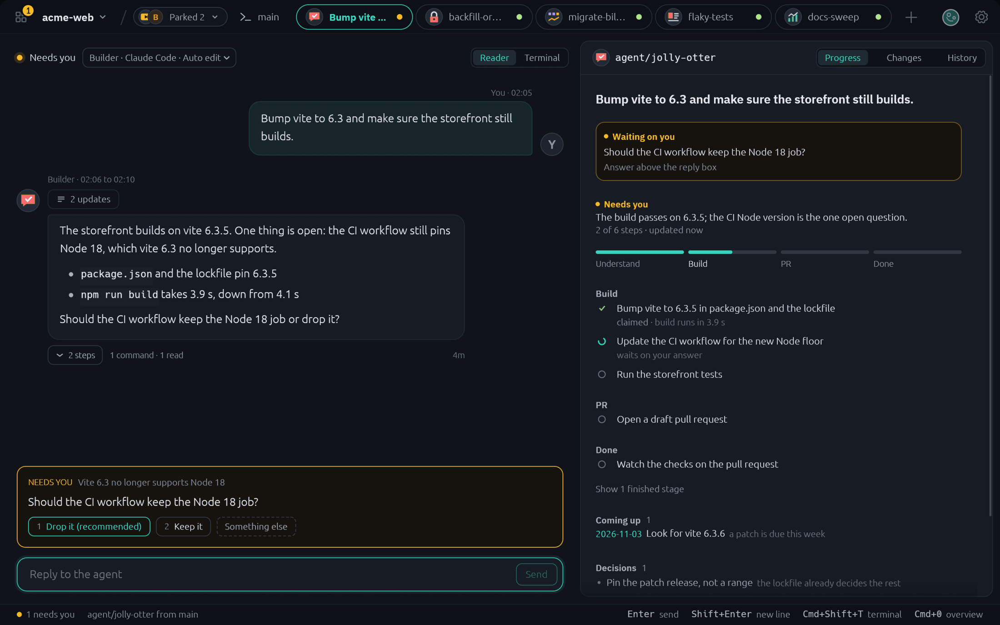
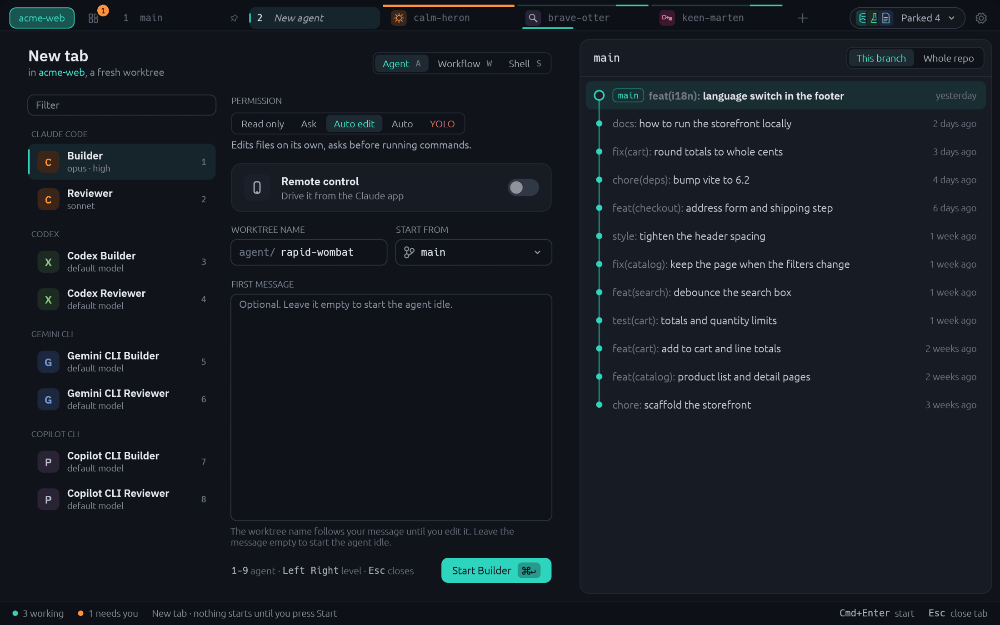
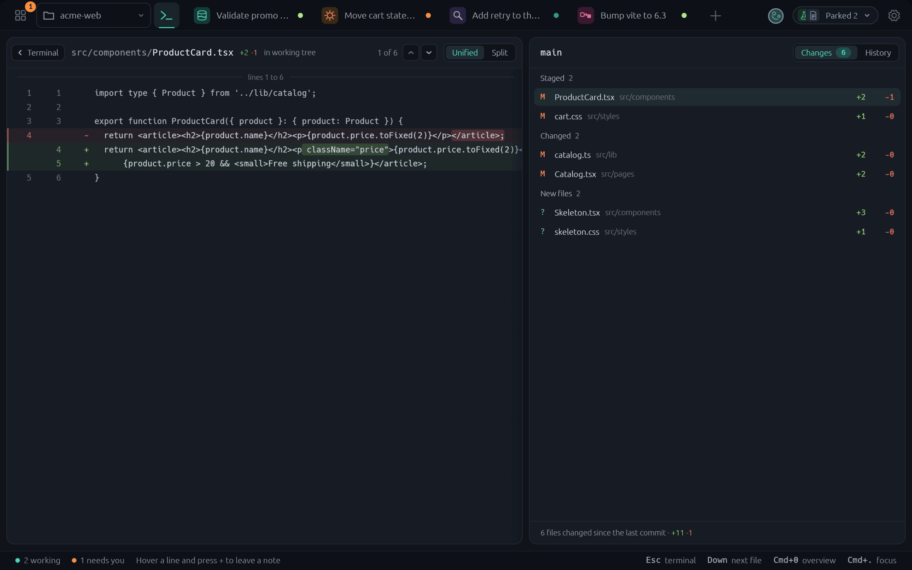
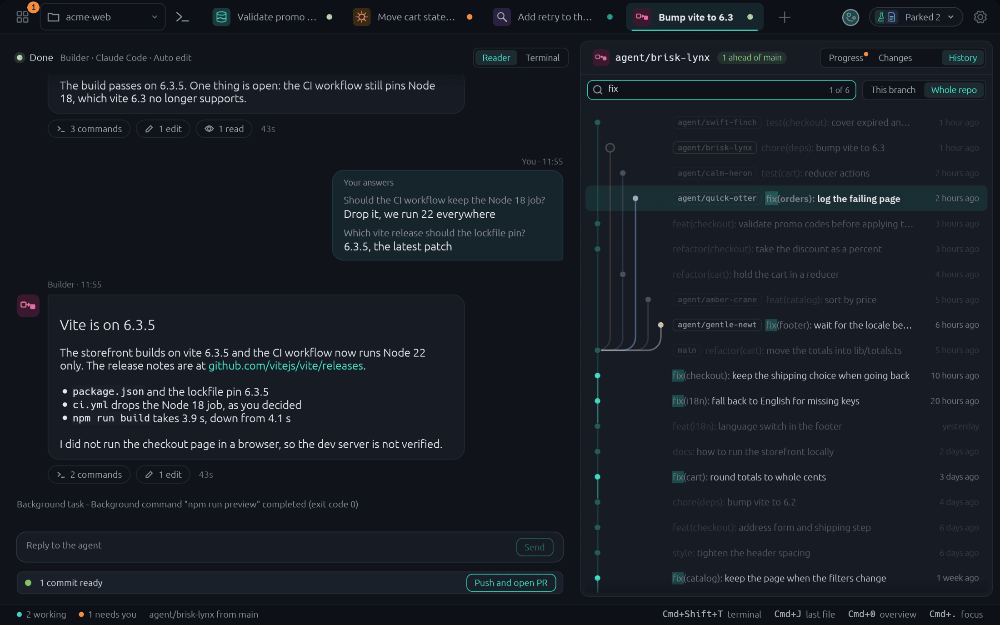

Tidewatch is a desktop app for macOS and Linux that runs AI coding agents in one window per git repo. Every tab is its own git worktree, a separate checkout on its own branch, so several agents can work on the same repo without touching each other's files. You watch them, read what they did, comment on their diffs and decide what ships.
The agent is on the left and its worktree on the right: Progress shows where the agent is, Changes what it has not committed yet and History the commits. Click a commit for its files, a file for its diff in the agent's place, and Cmd+F searches the commits.
Worktree tabs, one agent each
A new tab makes a worktree and starts Claude Code, Codex, Gemini CLI or Copilot CLI in it. Profiles set the agent, model and permission level. Agent tabs block git push.
Reader view
An agent tab reads as a chat on top of the live terminal: your messages as formatted text, each finished turn as its final answer with an N updates chip for the notes before it, and links you can click. One shortcut flips to the raw terminal.
Notes on diff lines
Leave a note on a line of the diff, then send the notes to the agent as one message.
Workflows
Chain stages, each with its own agent profile. Nine come built in, from Ship a feature and Fix a bug to Hunt a root cause, Change the UI with proof and Prepare a release, and there is an editor for your own. Gates can send the work back a stage.
Delivery
When the work is ready, Tidewatch shows the commits and the pull request text. When you approve, it pushes and opens the pull request with gh. A YOLO agent or a Meeseeks needs no approval: it decides and proceeds, and only product design and architecture questions reach you.
Overview and focus mode
Overview lists every tab with its state: working, needs you, done or failed. Focus mode hides the history so the terminal gets the whole window.
Session restore
Quitting saves your tabs. The next launch brings them back and resumes the agents where the CLI can. After a crash the agents resume by themselves; after a repeated crash, or when an agent crashed on its own, the command is typed and waits for you. A tab whose agent is not running reads Stopped and offers Resume.
Folder trust, asked once
On first launch Tidewatch asks before it marks its worktree folder as trusted in the agent CLIs' own config files. It changes nothing without a yes, and Settings can undo it.
One house style
One file, ~/.config/tidewatch/house-style.md, tells every agent how to write its answers. Edit it freely: Tidewatch never overwrites it.
Settings in your own repo
Settings, profiles and workflows can sync through a private GitHub repo you own, with your own git login.
Fresh ahead and behind counts
Open repos are fetched in the background every few minutes, so the counts on History stay current.
Keep awake with Touch ID
The Amphetamine keep-awake button can ask for Touch ID instead of your password, after a one-time setup in Settings.
Progress in four stages
Every agent keeps a progress report: Understand, Build, PR and Done, with its own steps under each. The Progress panel draws it, with a Last turn section for what was done, what needs you and what is next.
A done check
When an agent says it is done, Tidewatch looks at what is there: committed, pushed, pull request open, nothing left unverified. A failed check says so, and Ask agent to fix sends it back.
Closing a tab your way
Settings, General, Tabs sets which button Enter presses when you close a tab: delete the branch or keep it. A worktree with uncommitted changes always waits for a click.
Also new: every button is an outline, the tab strip is slimmer with the repo as a chip, and background task notes show as quiet rows in the Reader.
Every agent, one list.
Overview shows each tab and what it is doing, with the tabs that need you on top. A badge on the button counts them, so you can look away until one does.
Working, needs you, done or failed
The agent's own note, and a Check blocked tag when the done check fails
Desktop notifications when an agent needs you
Read the answer, answer the question.
The Reader turns the agent's session into text you can skim: your messages, the final answer of each turn, which tools it ran, and a question when it needs permission. Flip to the raw terminal any time.
Allow or deny a permission question from a button (Claude Code today)
Reply to the agent from a box under the answer
Each finished turn shows its final answer, with the notes before it folded under an N updates chip
Your answers to its questions come back as a card, and background task notes as quiet rows
Know where an agent is.
The Progress panel shows the agent's progress report in four stages: Understand, Build, PR and Done, with the steps the agent wrote for itself. Under the stages, Last turn lists what the last turn did, what needs you and what comes next.
A question from the agent as a card, with an Answer button
Done, Needs you and Next, read from the agent's last message
Checks on the work: committed, pushed, pull request, nothing unverified

Pick the agent and how far it may go.
A new tab is the form itself: an agent, a workflow or a plain shell. Pick a profile and its permission level, from read only up to a YOLO level that asks first, name the worktree and the branch it starts from, and write the first message. Start, and the agent begins with it.
Claude Code, Codex, Gemini CLI and Copilot CLI
A fresh worktree and branch for every tab
Tidewatch pushes for you, on approval

See what the agent changed.
A Changes tab sits next to History. It lists the staged, changed and new files with their line counts, and a click on a file shows its diff where the terminal was.
Staged, Changed and New files, each with its line counts
View only: the agent makes the commits

Find the commit you need.
A search field sits above History. Commits that match stay bright and the others fade, Enter steps through the matches, and Cmd+F puts the cursor in the field.
Matches the message, the author or the id
Enter and Shift+Enter jump between matches, Esc clears the search

Chain agents into a workflow.
Write the steps once: work, review, refactor. Each stage has its own agent, model and permissions, and a gate that Tidewatch checks before the next stage starts.
Tests pass, no blocking findings, or your approval
A failed gate sends the work back a stage
Nine are built in, including Hunt a root cause, Finish with proof and Refactor safely
Everything from the keyboard.
The command palette lists every command, the other open tabs, each agent profile and each workflow. A drop-down window on a hotkey keeps Tidewatch one keystroke away.
Cmd+Shift+P on macOS, Ctrl+Shift+P on Linux
A menu-bar item on macOS
Update checks, notify-only unless installed with Homebrew
Cmd+= and Cmd+- set the interface size, 80 to 150 percent
Built from
Two apps it grew out of.
Tidewatch is made by Hoboware from the parts of Kelp and stdusk that it needs.
macOS gets a universal app through the Homebrew cask. Linux gets a tarball and an AppImage from the GitHub Release.
01
Install
On macOS, with Homebrew. On Linux, download the AppImage or tarball from the latest release.
$ brew install hobo-ware/tap/tidewatch
02
Open a repo
Pass the git repo you want a window for.
$ tidewatch ~/code/my-repo
03
Bring an agent
Install at least one agent CLI: Claude Code, Codex, Gemini CLI or Copilot CLI. Tidewatch finds the ones on your PATH. Delivery needs gh.
$ claude --version
Builds are not yet signed with an Apple Developer ID: the Homebrew cask clears the download flag, so the app opens without a warning. To build from source instead: cargo run -p tidewatch -- <repo>. Details are in the README.
![Tidewatch with an agent's finished answer in the Reader on the left (your message above it, a 4 updates chip over the answer and a row of chips for its commands, edits and reads), and on the right the history card of its branch, three commits ahead of main: an uncommitted changes row and one commit opened with its changed files. Along the top, the Overview button with a badge, the repo chip, the main tab as an icon, then agent tabs named by their work (Validate promo codes, Move cart state into a reducer) with avatars and status dots, a Parked pill holding two more tabs, and a status bar along the bottom](shot-hero.png)